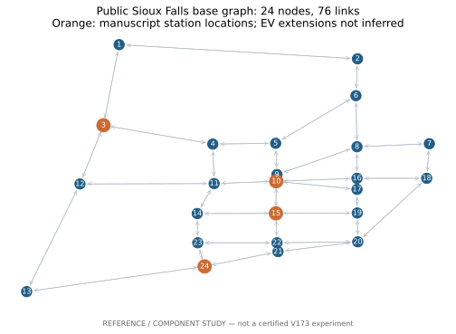
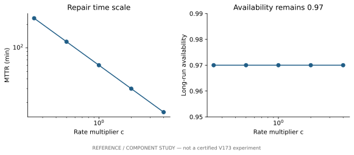
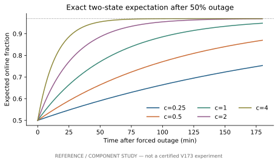
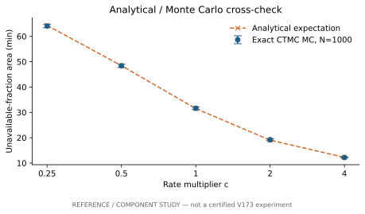
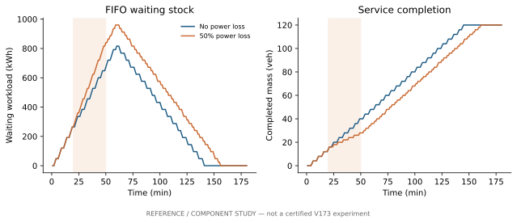
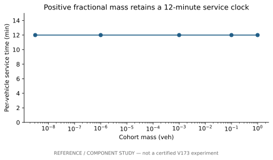
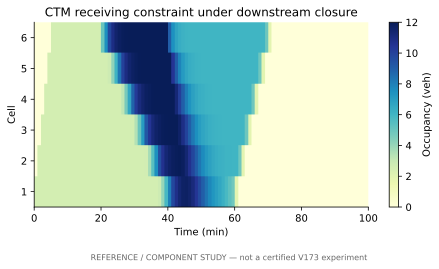
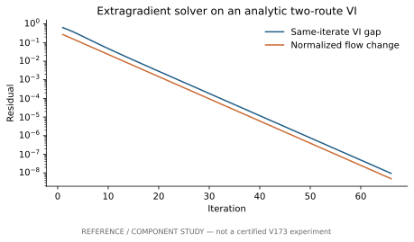
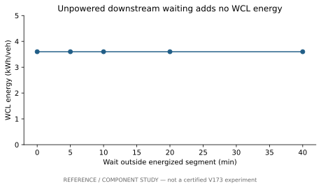
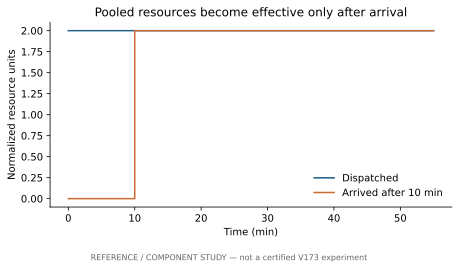

R01_SF24_BASE_TOPOLOGY

Public benchmark graph only. No 107-path or 491-path mapping is asserted.

Public benchmark graph only. No 107-path or 491-path mapping is asserted.

a=0.97 and MTTR=60 min at c=1 are declared mechanism parameters.

Initial state: exactly 10/20 components online. Curves are analytical, not traffic-network resilience.

95% percentile bootstrap intervals; same replicate indices are resampled for all rate scales.

Isolated 600-kW station, 150-kW vehicle cap, 120 vehicles, 12 kWh/vehicle.

30 kWh / 150 kW = 12 min for every positive mass; energy is mass-weighted.

Serial 6-cell component test. Full-network junction/spillback calibration is not supplied.

Analytical solution is [13/3, 17/3] vehicles. No V173 equilibrium is inferred.

4 powered minutes at 60 kW and 0.9 efficiency gives 3.6 battery-side kWh.

Control intervals last five minutes. Delayed resources are shifted, not duplicated.